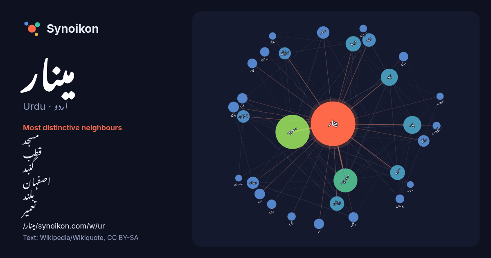

اردو · Urdu · word of the day list
مینار
“minaret” · The words found around it in 1072 instances from Urdu Wikipedia, Wikiquote.

Most distinctive neighbours
- مسجد 65×
- قطب 30×
- گنبد 30×
- اصفہان 25×
- بلند 24×
- تعمیر 24×
- اونچائی 21×
- اونچا 21×
- دروازہ 19×
- فٹ 16×
- تاریخی 15×
- ٹاور 15×
- چار 15×
- ہرن 15×
- منظر 14×
- داخلی 14×
- جامع 14×
- برج 13×
- نما 11×
- روشن 11×
× = how many times more often than in general Urdu Wikipedia text.
Most frequent neighbours
- میں 323
- کا 271
- مسجد 201
- سے 162
- اس 136
- تعمیر 98
- میٹر 78
- جو 72
- واقع 60
- گیا 57
- چار 55
- بھی 54
- کیا 51
- بلند 50
- کو 50
- تھا 48
- پاکستان 46
- جس 46
- قطب 40
- گنبد 38
In context
- مینار اسلامی طرز تعمیر میں مسجد کے ساتھ تعلق رکھتا ہے۔ مینار عام طور پر اونچے تقسیم شدہ لمبوترے تاج کی طرح تعمیر کیا جاتا ہے جو بغیر کسی سہارے کے ملحقہ Wikipedia snippets · مینار
- اسلامی سمٹ مینار یا اسلامی سربراہی کانفرنس مینار (Islamic Summit Minar) لاہور کے چیرنگ کراس، مال روڈ پر واقع ایک ستون نما ساخت ہے۔ اِس مینار کی بنیاد 22 Wikipedia snippets · اسلامی سمٹ مینار
- کلاں مینار (فارسی / تاجک: Minâra-i Kalân, Kalon Minor, Kalon Minaret( بخارا ، ازبکستان میں پائے کلاں قلعہ مسجد احاطے کا ایک مینار ہے اور شہر کا ایک نمایاں Wikipedia snippets · کلاں مینار
- ازگن مینار یا اوزکند مینار ازگن ، کرغزستان میں واقع 11ویں صدی کا ایک مینار ہے۔ یہ قریب قریب واقع تین اچھی طرح سے محفوظ مقبروں کے ساتھ ازگان میں قدیم کھنڈر Wikipedia snippets · اوزکند مینار
- رہروان مینار اصفہان سے 6 کلومیٹر شمال مشرق میں واقع ہے۔ مینار 30 میٹر اونچا ہے۔ یہ سلجوق زمانے کا ہے اور اس نے اپنی اصل شکل کو برقرار رکھا ہے ، لیکن اس Wikipedia snippets · رہروان مینار
- رقبے پر محیط ہے۔ مینار کی بلندی 196 فٹ ہے اور مینار کے اوپر جانے کے لیے 324 سیڑھیاں ہیں جبکہ اس کے علاوہ جدید لفٹ بھی نصب کی گئی ہے۔ مینار کا نچلا حصہ پھول Wikipedia snippets · مینار پاکستان
- چہل دختران مینار ( فارسی: مناره چهل دختران ) اصفہان ، ایران میں ایک تاریخی مینار ہے ۔ یہ اصفہان کے جوی برے ضلع میں واقع ہے۔ مینار پر کوفی تحریر کے مطابق Wikipedia snippets · چہل دختران مینار
- آجری مینار ( فارسی: مناره آجری ) ایران کے شہر خرم آباد میں واقع ایک تاریخی مینار ہے ۔ یہ مینار فلک افلاک قلعے کے قریب ہے اور قافلوں کو اندھیرے راتوں میں Wikipedia snippets · آجری مینار
More Urdu words
Precomputed on 2026-10-09 with default settings (±5 words, medium corpus). The interactive map can refresh it with live data.